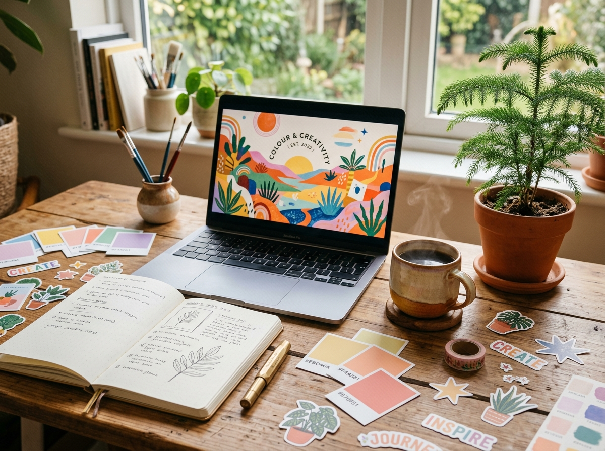

Deep Stories
Longform explorations into creative psychology, design history, and the deliberate habits of world-class makers.
Lumen is an independent publication exploring the intersection of intentional digital craftsmanship, human-scale technology, and the quiet beauty of slow travel.

In an era of relentless algorithmic noise, we slow down to examine what makes creative work memorable, durable, and genuinely meaningful.
Longform explorations into creative psychology, design history, and the deliberate habits of world-class makers.
Clear, step-by-step breakdowns of modern pure CSS techniques, architectural patterns, and tactile workspace design.
Hand-selected color pairings, typography specimens, and field dispatches from inspiring coffee shops around the globe.
A quick glimpse into our newest writing on craft, code, and intentional living.